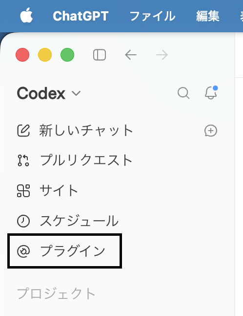
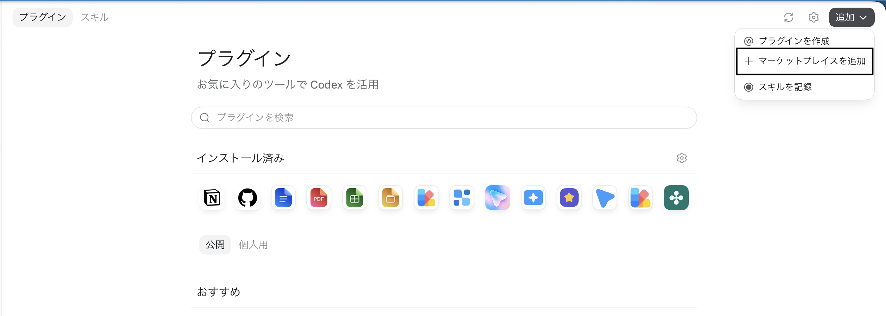
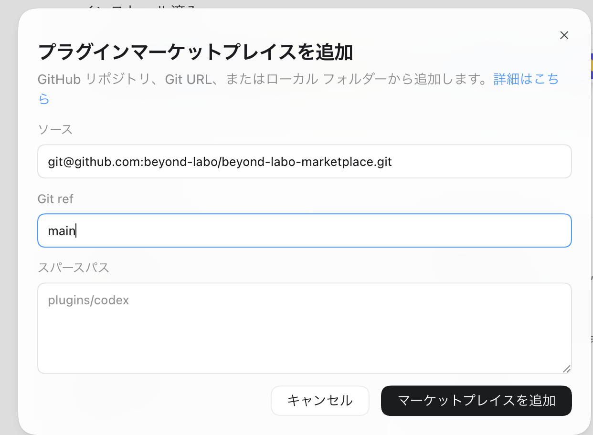
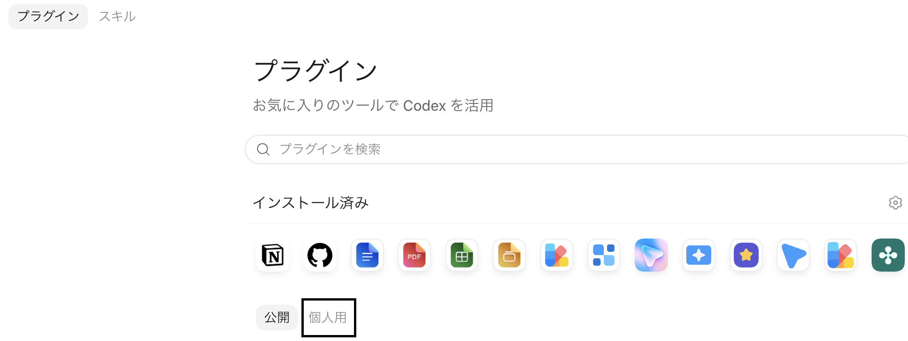

プラグイン画面を開く
Codex アプリの左側メニューから「プラグイン」を選択します。

Installation guide
マーケットプレイスを一度追加すれば、必要なプラグインをアプリから選んで導入できます。
Codex アプリの左側メニューから「プラグイン」を選択します。

画面右上の「追加」を開き、「マーケットプレイスを追加」を選択します。

ソースに https://github.com/beyond-labo/beyond-labo-marketplace.git、Git ref に main を入力します。スパースパスは空欄のままにします。

「個人用」タブを開き、使いたいプラグインの「追加」または「インストール」を実行します。追加後は新しいタスクを開始してください。
